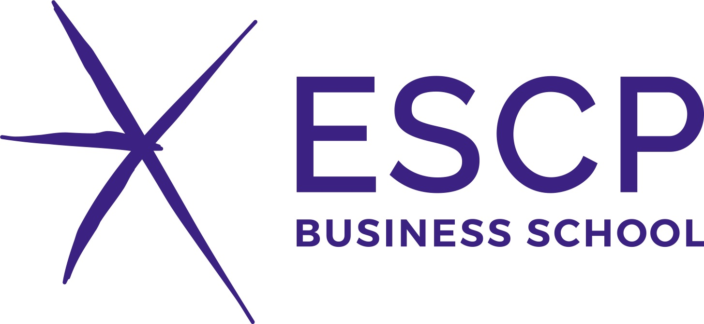
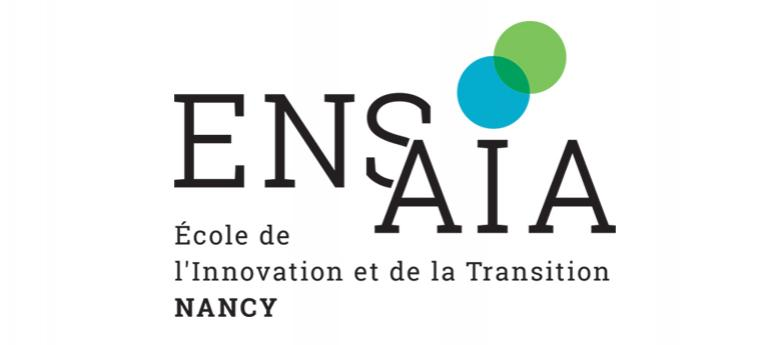
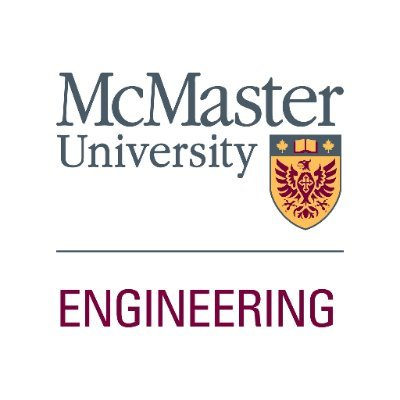
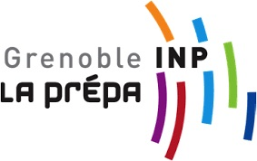
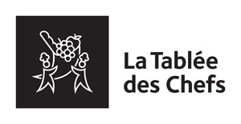
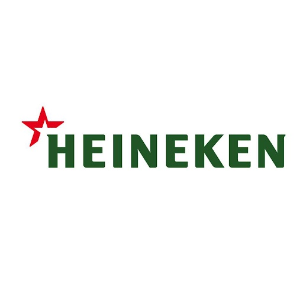

Hello, I am Josepha
I am a Food Sciences Engineer 🍎 🤓 doing a specialized master in Entrepreneurship & Innovation at the ESCP Business School. I am passionate about sustainability 🌱 , the food sector and innovation.
Education

-
From Sept. 2020 to Sept. 2021
Specialized Master in Innovation and Entrepreneurship / ESCP
 Paris, France
Paris, France Entrepreneurship, Finance, Marketing and Sales, Human Ressources and Law.
 -
From Sept. 2017 to Sept. 2020
Engineer in Food Sciences (Master 2) / ENSAIA (National Engineering School of Agronomy and Food Sciences)
Nancy, France
Specializing in Food Sciences/ Management of Activities,Projects and Innovation.
 -
From Sept. 2019 to Jan. 2020
Master of Engineering in Entrepreneurship and Innovation / McMaster University
 Hamilton, Canada -
From Sept. 2015 to Sept. 2017
Two-year preparatory program for admission to French Engineering School / CPP (Cycle Preparatoire Polytechnique)
 Grenoble, France -
From Sept. 2012 to Sept. 2015
High School Diploma / Liceo Franco-Mexicano
Mexico City, Mexique Main subjects : biology, chemistry, mathematics
Professional experiences

-
From Feb. 2020 to Aug. 2020
Internship in Industrial Development / L'Oréal
Clichy, France Project Manager for the development of new packaging and renovations of existing packaging (color, graphic chain) for the brands Garnier, Men Expert and l'Oréal Paris
-
From Jun. 2019 to Sept. 2019
Engineering Internship / PepsiCo Alimentos, Agricultural Development Center Sabritas
México City, Mexique Establishment of an experimental research protocol on the potato acclimation process for aeroponics.
-
From July 2018 to Aug. 2018
IT Platform Developer / La tablée des Chefs
Paris, France Creation of tools through the CRM (Customer Relationship Management) "Salesforce" Platform for the organization of volunteer events.
 -
From May 2017 to Jun. 2017
Production and Quality Internship / HEINEKEN ESPAÑA
Madrid,España -Monitoring of raw material flows, water used and yields for the production sector.

Languages

- French
- English
- Spanish
Computer skills

- Pack Office (Excel, Word)
- R (Statistical Computing)
- Matlab
- Salesforce